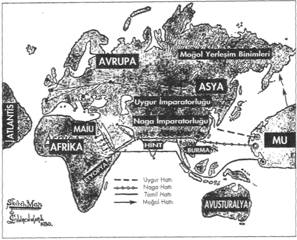
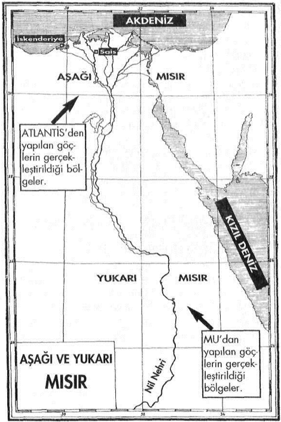

Günümüzden 3750 yıl önce de
Mısır'la ilgili bilgilere ulaşılmakta büyük zorluklar çekiliyordu...
Çünkü Mısır'ın geçmişi çok daha ötelere uzanıyordu...
Mısır'ın geçmişi deyince birçoklarımızın aklına hemen Firavunlar devri gelir... Firavunlar arasında en fazla duyulanı ise kuşkusuz ki, Ramses'tir... Özellikle de Klâsik Tarihçiler'in en fazla üzerinde durdukları Mısır'ın geçmiş tarihi, işte bu dönemlerdir... Ancak bu tarihler, Mısır'ın çok yakın dönemleridir. Mısır'ın geçmi.şini sorgulamak istiyorsak, bu tarihlerin çok daha ötelerine uzanmamız gerekir...
Örneğin M.Ö. 1750'lerde yaşayan Kral Nefer-hetop'un dönemi bizim için oldukça eski bir tarihi ifade eder. Ve Klâsik Tarihçiler ancak bu tarihlere kadar geriye giderek, "Mısır Kültürü" ile ilgili bir takım çıkarımlarda bulunmaya çalışmışlardır. Ancak bu tarih Mısır'ın geçmişini kapsamaz. Mısır'ın geçmişi, bu tarihlerden çok daha eskilere dayanır. Bunu şöyle bir örnekle daha açık anlatmaya çalışalım:
M.Ö. 1750'lerde yaşayan Kral Nefer-hetop Osiris'e tıpa tıp benzeyen bir heykel yaptırmaya karar verdiğinde, katiplerini araştırma yapmaları için Heliopolis Kütüphanesi'nin eski arşivlerine yollamıştı. Çünkü orijinalliğinden emin olacakları bir Osiris resmi arıyorlardı!... Yani günümüzden yaklaşık 3750 yıl önce...Yine günümüzden yaklaşık 3150 yıl önce yaşamış IV. Ramses'in de Mısır'ın kökenleriyle ilgili benzer antik araştırmalar yaptırdığı bilinmektedir. Evet... O dönemlerde de Mısır'ın geçmişi ve kökeni araştırılıyordu!... Şunu söylemek istiyorum ki, bizim için hayli eski bir dönemi ifade eden bu tarihler bile, Mısır'ın geçmişi ile karşılaştırıldığında hiç bir şey ifade etmemektedir. Antik Mısır Uygarlığı dendiğinde karşımıza çıkan tarih; bizleri istesek de, istemesek de çok daha gerilere götürür. Hem de binlerce değil en az 10-12 bin yıl öncelerine... Bu nedenle Kral Nefer-hetop kendi döneminde Mısır'ın geçmişi ile ilgili bir bilgiyi araştırırken, yaklaşık 7000 - 9000 yıl öncesiyle ilgili tarihi bilgilere ulaşmaya çalışmaktaydı. Gizemi binlerce yıl öncesine ait Osiris'e ait bir resim bulmaya çalışan Kral Nefer-hetop'dan bugüne gelinceye kadar geçen süre, Mısır'ın geçmişini daha da unutturmuş ve bizi 10.000 yılı aşkın bir zaman süreciyle karşı karşıya bırakmıştır. İşte bizim araştırdığımız "Antik Mısır Sırları"nın dayandığı geçmiş böylesine devasa bir süreçle ilgilidir.
Bilgilerinin belirli bir kısmını Mısırlı rahiplerden almış olan Herodot'a göre, yazılı tarih onun döneminden 11.340 yıl öncesine dayanır. Bu yaklaşık olarak Atlantis'in batışına denk gelen bir tarihtir. Yani Hcrodot'un vermiş olduğu bu tarih. Tufan sonrası bizim uygarlığımızın başlangıç tarihidir... Bu tarih, Mısır için de çok önemli bir dönüm noktasıdır.
Geçmişte meydana gelen ve hemen hemen tüm kutsal kitaplarda dile getirilen Tufan'ın etkileri, bazı bilimadamlarının iddia ettikleri gibi sadece Mezopotamya ve Ortadoğu ile sınırlı kalmamıştır. Aksine, tüm dünya insanlığının hafızasında silinemeyecek izler bırakmış olan bu büyük felâkeder dizisinden, Dünya üzerinde en az etkilenen bölgelerin başında Ortadoğu gelmiştir.
Bir zamanlar yaşanan ve Dünya'nın birçok bölgesini etkileyen iki büyük doğal afetten söz etmeyen ulus ya da kavim yok gibidir. Dünya üzerinde birbirlerinden çok farklı bölgelerde yaşamış olan tüm eski ulusların mitolojilerinde ve dinlerinde bu trajedik anıya yer verilmiştir. Yaşanan bu felâketler, dinlerde (özellikle de son üç dinde) "Tufan" olarak isimlendirilmiştir. Bu büyük felâkeder zincirinin ilkinde Mu Kıtası diğerinde ise Atlantis Kıtası arkalarında küçük adacıklar bırakmak suretiyle tamamen batmışlardır.
Bu yaşananlarla ilgili olarak Kur'an-ı Kerim'de pekçok ayet vardır:
"Ad, Semud milletleri ile Ress'lileri ve bunların arasında birçok nesilleri de yerle bir ettik. Her birine misaller vermiştik ama dinlemedikleri için hepsini kırdık geçirdik." (Furkan Suresi: 25/38-39)
"Gerçekleşecek olan! Nedir o gerçekleşecek olan gün? Gerçekleşecek olanın ne olduğunu sana ne bildirir? Semud ve Ad milletleri tepelerine inecek bu gerçeği yalanladılar. Bu yüzden Semud milleti zorlu bir sarsıntı ile yok edildi. Ad milleti de bu yüzden önünde durulmaz dondurucu bir rüzgarla yok edildi... Ey insanlar! Su taştığı vakit, siz bir ibret olmak üzere, anlayışlı kulaklar anlasın diye süzülen gemide, sizi Biz taşımışızdır." (Hakka Suresi: 69/1-7,11-12)0)
"Nuh Tufanı" olarak Kur'an-ı Kerim'de Muhammed Peygamber'e tebliğ edilen(vahyedilen) bu meselenin, bilinmeyen olaylardan olduğu, ayetlerde şu şekilde anlatılmıştır:
"Gemi, dağlar gibi dalgalar içinde onları götürürken..." "Yere, 'Suyunu çek! Göğe 'Ey gök sen de tut' denildi. Su çekildi, iş de bitti. Gemi Cudi'ye oturdu."
" 'Ey Nuh, sana ve seninle beraber olan topluluklara bizden bir selamet ve bereketle gemiden in. Ama birçok toplulukları da geçindireceğiz, sonra onlara can yakıcı bir azap vereceğiz' denildi. Ey Muhammed, bunlar sana vahyettiğimiz bilinmeyen olaylardır." (Hud Suresi: 11/42,44,48-49)
Belli ki, Muhammed Peygamber'in döneminde de Tufan'ın izleri hafızalardan çoktan silinip gitmişti.
Tufan'da neler olmuştu? Tek bir cümleyle özetlemek gerekirse...
Anlatılanlar iki büyük etkenden bahsetmektedir: Su ve ateş... Tabii bu arada meydana gelen büyük depremleri de ilave etmek gerek... Yaşanan böylesi büyük felâketlere sebebiyet veren etkenler nelerdi?
Dünya eksenindeki kayma ve kutupların yer değiştirmesiyle birlikte gelen büyük sel baskınları ve ani iklim değişiklikleri Okyanus dibindeki gazlar ve bunun sonucu oluşan büyük depremler. Atlantis 'in son dönemlerindeçıkan savaşta majik tekniklerele birlikle doğa güçlerinin negatif alanlarda kullanımı. İşte bütün bunlar ve bunlara eklenen bazı diğer kozmik etkenler; dinsel kayıtlarda adına ''Tufan" denilen büyük bir trajedinin dünya üzerinde yaşanmasına neden olmuştu.
Bu konuda akılları karıştıran bir çelişkiden söz etmek istiyorum. Bu anlatılanlar günümüz bilimsel buluşları ve eskinin dinsel kayıtlarıyla örtüşse de, Klasik Tarih Bilimi'yle örtüşmeyen noktaları olduğunu hepimiz biliyoruz. Çünkü Klasik Tarih Bilimi'ne göre bilinen insanlık tarihimiz şöyle bir kronolojik sıra takip etmektedir:
Taş Çağı'ndan Demir Çağına
Tam olarak ne zaman başladığı konusunda farklı tarihler vardlır. Ancak Taş Çağının bitişiyle ilgili Tarihçilerin üzerinde birleştikşerri süre günümüzden 9.000 yıl öncesine aittir. Demir Çağı'nı Bakır Çağ, ve Bronz Çağ izlemiş ve insanlık Demir Çağa ulaşmıştır. Demir Çağ'ın Mezopotamya'da M.O. 12. Yüzyıl'da, Avrupa'da ise M.O. 8. Yüzyıl'da başladığı ileri sürülür. Ve en önemlisi de, bu zaman dilinderinin öncesinde, son derece ilkel bir insanlık tarihinden bahsedilir. Maymunla insan karışımı bir insanlık tarif edilir. Klasik Tarih Bilimcileri'nin kronolojisi içinde, günümüz uygarlığıyla karşılaştırıldığında son derece ileri bir düzeye erişmiş olan Mu ve Atlantis Uygarlıkları yer almaz! ...
İşte en büyük sorunda budur. Birçok tarihçi Atlantis ve onun da öncesindeki Mu Uygarlığı nı efsanevi kıtalar olarak nitelendirmişlerdir. Böyle olunca da insanlık tarihimizin şu an en ileri nokta bulunduğu ile ilgili genel klasik bir kabul bulunmaktadır. Ancak yukarıdaki Klasik Tarih Bilimi'nin verilerinden de anlaşılabileceği gibi, Taş Devri'nin Bitişi günümüzden 9.000 yıl öncesine denk gelmektedir. Klasik Tarih Bilimi'nin bu verilerini bir an için doğru kabul edecek olursak, bizim bugünkü teknolojik seviyemize gelebilmek için Taş Devri'nin bitişinden bugüne kadar yaklaşık 9.000 yıl geçmiş olduğu görülmektedir. 9.000 yıllık bu süre içinde, atomik güçleri kullanabilecek ve uzaya açılabilecek aşamayla geldiğimiz düşünülecek olursa; günümüzden en az 70 bin yıl önce yaşamış olan bir uygarlığın bilim ve teknoloji alanlarında hangi boyutlara ulaşmış olabileceklerini tasavvur bile edemeyeceğimiz ortada değil midir?!...
Dolayısıyla Tufan öncesi Mu ve Atlantis Uygarlıklan'nın bizlerden çok daha ileri düzeyde bir uygarlık olduklarını, bu basit mantık yürütmesinden bile çıkartabilmek mümkündür. Ama kuşkusuz ki, bunun için önce Atlantis ve Mu Uygarlıkları hakkında bilgi sahibi olmak gerekir.
Az önce Mezopotamya ve Orta Doğu'nun yaşanan büyük doğal afetlerden daha az etkilendiğinden bahsetmiştik. Bu arada Akdeniz ve Karadeniz'i de daha az etkilenen bölgeler arasında sayabiliriz. Her ne kadar Tevrat ve Kur'an'da anlatılan "Tufan" bu bölgelerdeki yaşananları anlatsa da, yine de bir Atlantik Okyanusu ve Pasifik Okyanusu'nda meydana gelenlerle kıyaslanamayacak kadar daha küçük boyutta olmuştur. Akdeniz, Karadeniz ve Kızıldeniz gibi nispeten kapalı bir havza içinde yer alan denizlere kıyısı olan yerler. Kutuplar'daki açısal değişimin sonucu ortaya çıkan büyük su baskınlarından daha az etkilenmiştir. Nitekim Tevrat ve Kur'an'da bahsedilen Nuh Tufanı'nda, kimi insanlar basit tahtadan teknelere binerek dahi, bu büyük felâketi atlatabilmişlerdir. Bu büyük doğal afetlerde bilindiği gibi önce Pasifik Okyanusu'ndaki Mu Kıtası daha sonra da Atlantik Okyanusu'ndaki Adantis Kıtası parçalanarak hemen hemen tamamen sulara gömülmüşler, diğer kıtalarda ise kısmi parçalanmalar ve büyük su baskınları meydana gelmiştir. Marmara Denizi ile Karadenizi birleştiren İstanbul Boğazı bu dönemde açılmış ve iki denizi büyük bir selle birlikte birleştirmiştir. (Bu konuyla ilgili yapılan bir bilimsel araştırmanın sonuçlan geçtiğimiz yıl Discovery kanalında yayınlanmıştır.) Meydana gelen tüm bu büyük doğal afetlerin sonucunda Dünya üzerinde yokolmaktan kurtulabilen tüm uygarlıklarda büyük bir gerileme kaçınılmaz olmuştur. Dünya'nın büyük bir bölümünde kelimenin tam anlamıyla, korkunç bir gerileme yaşanmıştır. Kurtulabilenler boş alanlara yerleşmişler ve her türlü teknolojik imkândan bir anda yoksun kalıvermişlerdir. İşte günümüz Klasik Tarih Bilimi'nin bundan 9.000 yıl önce yaşadığını iddia ettiği Taş Devri'nin altında yatan gerçek bu gerilemedir. Yukarıdaki kronolojik tarihlendirmedeki bir başka ayrıntıya daha dikkatlerinizi çekmek istiyorum:
Klasik Tarih Bilimi'nce; Demir Çağ, Mezopotamya'da M.Ö. 12. Yüzyıl'da, Avrupa'da ise M.Ö. 8. Yüzyıl'da başladığının söylenmesi de, Mezopotamya ve Ortadoğu'nun yaşanan felâketlerden daha az etkilenilmiş olduğu gerçeğini gözler önüne serer. Çünkü Mezopotamya'da Demir Çağ Avrupa'ya oranla daha çabuk başlamıştır. Klasik Tarihi Kronoloji'ye göre Mezopotamya Uygarlıkları o dönemde Avrupa'daki Uygarlıklar'dan 400 yıl önde bulunmaktaydı...
Uygarlıklar'ın Tufan sonrasında yaşadığı gerileme teknoloji ve bilim alanında görüldüğü gibi aynı zamanda ruhsal alanda da kendisini göstermiş ve aynen Güneş'ten uzakta kalan gezegenlerin soğuması gibi, bir zamanlar Mu ve Atlantis'de yaşayan kozmik kökenli inisiyatik bilgiler de, benzer bir gerilemenin içine girmiş ve giderek ilk günkü değerlerinden uzaklaşmışlardır. Bu yozlaşmayı nispeten yavaşlatabilen Orta Asya, Mısır ve Mezopotamya yörelerindeki bazı merkezler ise, bugünkü uygarlıkların beşiği olmuştur. Bu merkezlerde yeralan özellikle üç toplum bunun başını çekmiştir:
1- Orta Asya'da Şamanlar ve Tibetliler.
2- Mezopotamya'da Sümerliler.
3- Kuzey-Doğu Afrika'da: Mısırlılar...
Gerçekten de Kültür ve Uygarlık Tarihi içinde bu üç büyük merkezin fonksiyonu ve katkısı son derece önemlidir. Burada Mayalar'ı neden saymadığımı merak eden okurlarımızı duyar gibi oluyorum... Kuşkusuz ki, Orta Amerika Kıtası'ndaki Mayalar da çok önemli bir merkezdi ancak bu toplumla bizim uygarlığımızın çok fazla bir irtibatı olamamıştır. Günümüz ABD halklarının atalarını oluşturan İngiliz ve İspanyol koloniciler Mayalar'ın torunları Kızılderililer'le bir irtibat sağlamışlardı ama bu irtibat o kültürü tanımaya çalışmaktan ziyade, korkunç bir katliama yönelik bir uygulamaya dönüştüğü için ne yazık ki, o kültürden hiç bir şey elde edememişlerdir. Etselerdi şu anda dünyadaki fonksiyonları herhalde çok daha farklı olurdu...
Neyse, birgün gelir her şey yerli yerine oturur elbet!...
Konumuzdan uzaklaşmamak için bu konuda başka şeyler yazmaktan kendimi uzak tutmaya çalışıyorum... Konumuza geri dönelim.
Ezoterik Gelenek Mısır Uygarlıgrnı araştırma konusu yapan başlı başına bir bilim dalı vardır ve bu bilimle uğraşanlara ''Egyptolog" denir. Ancak ne var ki, Egyptologlar'ın bizlere aktardıkları Mısırla ilgili bulgular son derece sıradan bilgilerden ibarettir. Onlar bizlere Firavunlar döneminin tarihini ve Mısır yapılarının belirli özelliklerini anlatmaktan öte pek fazla bilgi vermezler Onlar için piramitlerin nasıl yapıldıkları bile bir muammadır-. Peki ama bu muammaları kim çözecek? Bunlara cevap ne zaman verilecek?
Bu çelişkiyi ilk kez kamuoyuna duyuran araştırmacı, James Churchward olmuştur. James Churchward yaymladığı ilk kitabında bu konuyla ilgili şu satırları kaleme almıştır:
Egyptologiar Mısır'la ilgili birçok konuda oluşturdukları teoriyle gerçekten önemli ölçüde sapmışlardır. Bunun nedeniyse ne eskilerin sembolizmini ne de bu sembolik yazıtların ezoterik anlamlarını anlayamamış olmalandır. Bunun için onları suçlayamayız. Çünkü bu konuda bir ipucu bulunmadığı gibi, bunların öğrenilebileceği bir okul da yoktur. Bu sırtar en azından yüzlerce yıldır sadece bir avuç yaşlı Doğulu Bilge tarafından bilinmektedir. Tüm bu yaşlı bilgeler yaşamlarını kendi mabetlerinde geçirmişler ve dış dünya ile nadiren irtibatları olmuştur. Bu çok ender de olsa gerçekleştiğinde ise, onların aktardığı bilgiler, eldeki mevcut teorilerle o kadar uyuşmamıştır ki, bu anlatılanlar anlamsız şeyler olarak değerlendirilmiştir. James Churchward bu satırları kaleme aklığında 1900'lü yılların henüz daha ilk çeyreğindeydik. O günlerden bu günlere gelinceye kadar aradan bir hayli zaman geçmiş olmasına rağmen, Klasik Tarih Bilimi'nin etkisi altındaki Egyptologlar için değişen çok fazla bir şey olmamıştır-. Onların büyük bir bölümü hâlâ okullarda kendilerine anlatılan klasik bilgileri tekrar edip durmaktadır. Mısır bilmecesinin çözümü için James Churchward'ın vaktiyle söylemiş okhıgu gibi sadece tek bir yol vardır:
"Ezoterik Bilgilerle meseleyi ele almak..."
Ezoterik Bilgiler ışığında meseleye yaklaşmanın haricinde Mısır Kültürü'nün derinliklerine inebilmenin başka hiç bir yolu yoktur. Bu önemli unsur hesaba katılmadan yapılacak hangi araştırına olursa olsun, bizi sonuca ulaştırmayacak ve Mısır'da bir zamanlar neler yaşandığını bizlere gösteremeyecektir. Artık hadi gelin, binlerce yıl öncesine doğru yeniden yola çıkalım ve o günlerin anısını ''Dünya'nın Ezoterik Tarihi"ni göz önünde bulundurarak yeniden canlandıralım... Bakalım geçmişimizi ve geleceğimizi ilgilendiren nelerle karşılaşacagız?
Tufan'dan sonra çok büyük bir gerileme yaşayan insanoğlu, her şeye yeniden başlamak zorunda kaldığı için, ilkel kabileler dönemine geri döndü. Bu tam anlamıyla bir geri dönüştü... İnsanlığın aşağıya iniş sürecindeki çok önemli bir geri adım böylelikle atılmış oluyordu...
İnsanlık hem fiziksel hem de ruhsal anlamda büyük bir gerilemenin içine girmişti. Ancak bir zamanlar yaşanan bu trajedi ile ilgili anılar eski lolumiarın geleneklerinde günümüze kadar gelebildi. Bunlar arasında Mısır Geleneğini en önde gelenler arasında sayabiliriz.
Tarihin babası olarak anılan ünlü tarihçi Heredot, Mısır'a yaptığı bir gezi sırasında bir rahipten duyduklarını kitabında şöyle anlatır:
Bir Mısırlı Rahip bana: "Bilmiş ol ki , atalarımız zamaınnda Güneş iki defa battığı yerden doğdu, sonra aynı olay tekrar tersine meydana geldi" dedi. Kur'an-ı Kerim'deki bir ayet ise, sanki Mısırlı rahiplerle söz birliği etmişçesine şöyle der:
O, iki Doğu'nun Rabbi'dir , iki Batı'nın Rabbi'dir. " (Rahma n Suresi : 55/17 )
Günümüzde yapılan jeolojik ve kilimatolojik araştırmalar, Herodot'un aktardığı Mısırlı rahibin sözlerini doğrulamışın Çünkü eldeki bilimsel veriler kutupların birden fazla yer değiştirmiş olduğunu kesin olarak göstermektedir. En son kutupsal değişimin Atlantis'in batışına denk gelen tarihlerde meydana geldiği tahmin edilmektedir.
Bu büyük felâketler zinciri henüz daha başlamadan önce Mu ve Atlantisli rahipler yaşanacaklardan haberdardılar ve bu konuda halklarını çok önceden uyarmışlardı. Beklenen Tufan'dan en az etkilenecek olan bölgeler tespit edildikten sonra buralara yoğun göçler düzenlemeye başlamışlardı. İşte bu bölgelerden biri de Mısır topraklarıydı.
Mısır önce Mu'dan sonra da Atlantis'ten yoğun göçler almıştı. Tarihçilerin bir zamanlar bir türlü içinden çıkamadıkları; "Bir anda böylesine ileri düzeyli bir uygarlık Afrika'nın Kuzeyi'nde nasıl oluşmuştur" sorusunun cevabı işte bu göçlerde yatmaktaydı.
Tarihin çok eski dönemlerinden başlayan, Atlantis'le Mu arasında sürekli bir irtibatın olduğu bilinmektedir. Bu irtibat Mu Bilgeliği'nin Atlantis'e taşınmasında çok önemli bir rol görmüştür. Orta Asya'nın muhtelif yörelerinde buluanan çok eski bir kültüre ait bilgiler veren taştabletlerden elde edilen ezoterık bilgilere göre, Mu'ya indirilen kozmik öğretinin kaynağı "Sirius Kültürü" idi. Bu tabletlerin içerikleriylc ilgili ilk bilgiler ünlü araştırmacı James Churchward tarafından dünyaya duyurulmuştur, James Churchward kendi anlayışı ile bu bilgileri yorumlamış ve bu öğreti sistemine dünyanın ilk Tek Tanrılı dini adını vermişti. Onun Tek Tanrılı din olarak yorumladığı sistem aslında bir din değil, tam anlamıyla kozmik kökenli bir öğretiydi. Bu öğreti ilk kez Mu'da yaşam bulmuş ve oradan da Atlantis'e taşınmıştır. Ancak zamanla Atlantis'te bu öğreti dejenere olmuştu. İşte bundan sonrasını tabletler şöyle anlatır.
Özetle aktarıyorum:
Tabletler konumuzla çok yakından ilgili olan bir isimden bahsetmektedirler. Bu isim Osiris'tir... Günümüzden 18-20 bin yıl önce yaşamış olan bu kişiden Atlanlisli bir bilge olarak söz edilmekledir. O dönemlerde Atlantis'te başlayan dejenerasyon hat safhaya ulaşmıştı, Osiris bilgisini derinleştirmek üzere doğduğu ülke Atlantis'i terkedip Mu Kıtası'na gitti. Oradaki Naakal Okullan'nda "MU Kozmik Öğretisi" ile ilgili inisiyatik dersler aldı. Daha sonra Atlantis'e geri döndü. Tüm yaşamını Atlantis halkını aydınlatmaya ve Mu Kültürü'nü anlatmaya adıyan Osiris, birtakım çıkarları uğruna Kozmik Öğretiyi yozlaştırmış Atlantis rahip sınıfının etkisi altında oluşan yanlış anlayışları ve uydurma kavramları düzeltmeye çalıştı. Halktan çok büyük destek gördü. Halk kısa süre içinde ona büyük bir sevgi ve saygıyla bağlandı. Sonunda Atlantis'in ruhani lideri oldu. Kendisini Atlantis Kralı Uranos'un yerine getirmek istediler. Fakat o bunu kabul etmedi. Ölümünden sonra kendisine bağlı inisiyelerce adının yaşatılması için, Atlantis'te yaymaya çalıştığı Mu kökenli Kozmik Öğreti'ye "Osiris Dini" adı verildi. Ve binlerce yıl bu öğreti Atlantis'e hakim oldu.
Atlantis'te bunlar yaşanırken, Mu Kıtası'ndan çevre kıtalara göçler de başlamıştı. Mu'nun önde gelen ırklarından biri olan Nagalar önce Burma'ya oradan da Hindistan'a, sonrasında ise iki kola ayrılarak bir kol Babile diğer bir kol ise Kızıldeniz üzerinden "Yukarı Mısır" tabir edilen Afrika'nın Kuzey Doğu'sundaki Kızıldeniz kıyılarına yerleştiler. Eski tarihi kayıtlarda bu bölge ''Maiu" olarak isimlendirilmişti. Yukarı Mısır'daki Nübye'de yer alan Maiu, bu günkü Suakin kentinin yakınlarında, Kızıldeniz kıyısındadır. Bu bölgelerde yerleşim birimlerinin kurulduğunu, hem Mısır kaynakları hem de Hint kaynaklan teyid etmektedir. Bazı Yunan tarihçilerinin ve filozoflarının "Mısırlılar, Hindistan'dan gelmiş kolonicilerdir" demelerinin altında yalan gerçek işte budur. Kitaplarını Hindistan'daki çeşitli gizli mabetlerdeki kayıtlardan yararlanarak kaleme aldığı bilinen dünyaca ünlü Hint tarihçisi Valmiki de, bu konuda son derece açık anlatımlarla bulunmuştur. Örneğin Rişi Mabedi'nin gizli kayıtlanrıdan aldığı bir alıntıda şöyle der:
"Hindistan'dan gelen Mayalar, Mısır'da bir koloni kurdular ve buraya Maiu adını verdiler." Ramayana isimli ünlü eserinde ise daha ayrıntılı bir bilgi verir:
"Naakaller önce Hindistan'ın Dekkan bölgesinde yerleştiler. Sonra da dinlerini ve bilgilerini Babil ve Mısır kolonilerine aktardılar."

Tibet civarındaki bir mabette bulunan eski bir haritadan uyarlanarak hazırlanmıştır.Bu harita ilk kez James Churchward tarohndan dünya kamuoyuna duyurulmuştur.
Kısaca özetlemek gerekirse:
Mısır topraklarına ilk ayak basanlar Mu kolonilerinin Naga koluydu. Nagalar Mu'da Naakaller olarak isimlendirilmekteydi. Bu nedenle eski tarihi kayıtlarda bazen Nagalar bazen ise Naakeller olarak bu toplum isimlendirilmiştir. Mu Kıtası batmadan önce gerçekleştirilen bu göç Mısırlılar'ın atalarını oluşturdu. Ancak Mısır, hem bu dönemde hem de Atlantis'in batışına yakın dönemlerde yoğun olarak Atlantis'ten de göç almıştır. Bu nedenle Mısır halkının ataları dediğimiz zaman hem Mulular'ı hem de Atlantisliler'i bir arada ele almak gerekir. Mısır toplumu o topraklarda sıfırdan başlayarak gelişim gösteren bir uygarlık değil, yapılan göçlerle gelişmiş bir kültürün buraya taşınmasıyla ortaya çıkmış bir ülkedir Hatta bir değil birbirine son derece benzeyen iki kültürün: Mu ve Atlantis Kültürü'nün...
Evet... Gelelim Atlantis'ten Mısır'a yapılan göçlere..

Atlantis'ten yapılan göçler, bölgenin "Aşağı Mısır" olarak tabir edilen kesimine gerçekleştirildi. İlk büyük yerleşim birimi ve ilk büyük mabet Nil Deltası'ndaki Sais'te kuruldu. Daha önce Osiris Öğretisi'nin Atlantis'te nasıl bir gelişim gösterdiğini görmüştük. Atlantis'ten Mısır'a gerçekleştirilen göçlerle, sözünü etmiş olduğumuz Osiris Öğretisi de Mısır'a taşındı. Osiris Öğretisi'nin Mısır'a getirilişi, Atlantisli bir bilge olan Thot tarafından M.Ö. 14 bin yıllarında gerçekleştirilmiştir Yani Atlantis'in batışından yaklaşık 4.000 yıl önce...
Thot zamanından Menes zamanına kadar yani MÖ. 14.000'den M.Ö. 5000'e kadar geçen tam 9000 yıl boyunca hu öğretinin gizli mabetlerde korunması Horus unvanı ile anılan rahiplerce sağlandı. Bu konuda en açık yazılı kaynaklardan biri Herodot'a aittir. Herodot şöyle der:
"Horus, Kral Menes tahta geçmeden evvel Mısır'ın Hiyararşik yöneticisiydi."
Benzer bir başka anlatım da Mısırlı rahip ve tarihçi Manetho taralından kaleme alınmıştır:
"Mısır'daki bilgeler yönetimi 10.000 yıl devam eder. Bilgeler, Hiyeratik hükümdardırlar."
Mısır'ın Ölüler Kitabı'nda ise Horusla ilgili şöyle bir tanımlama yer alır:
"Horus, ilâhi babasının özünden geldi. Mısır'ın Yöneticisi oldu."
Gelenler kültürleriyle birlikte gelmişler ve bir anda Mısır'da büyük bir inisiyatik merkez kurmuşlardı. Ancak mabetlerin derinliklerinde saklanan bu "inisiyatik sırlar" dışarıya hiç bir zaman tam olarak açıklanmadı. Halka "Osiris Yolu" adı altında son derece kapalı bir şekilde mitolojik hikâyeler tarzında, bilgiler üstü örtülü bir şekilde verilmekteydi. Buna karşın özel eğitime tabi tutulan son derece kısıtlı sayıdaki kişiye ise,Horus'un Rahipler'i ellerindeki sırları açıklamaktaydılar. Bundan dolayı Mısır'da "Osiris'in Yolu" ve "Horus'un Yolu" olarak bilinen, biri egzoterik diğeri ise ezoterik içerikli iki ayrı öğreti ortaya çıkmıştı. Daha sonraları Horus Rahipleri de Osiris Rahipleri olarak anılmaya başlandı. Ancak sırların gizli tutulması konusunda hiç bir şey değişmedi. Ve sırlar asla dışarıya sızdırılmadı. Günümüze kadar gelebilen taş tabletlerdeki ve diğer yazılı kaynaklardaki anlatılanlar, bu aktardıklarımızı birebir doğrulamaktadır. Dahası bu anlatılanlar, günümüzden birkaç bin yıl önce Mısır'a giden gezgincilerin ve tarihçilerin Mısırlı rahiplerden aldıkları bilgilerle de örtüşmektedir. İşte birkaç örnek:
Girit'te Schliemann tarafından bulunan bir tablet:
''Mısırlılar, Misar'ın soyundan gelmektedir. Misar Tarih Tanrısı Thot'un çocuğuydu. Thot ise Atlantisli bir rahibin göçmen oğluydu, ilk mabedini Sais'te kurdu ve orada ana vatının bilgeliğini öğretmeye başladı."
İkinci Hanedan, Firavun Sent Dönemi'ne ait bir başka papirüs:
"Firavun Sent, Atlantis'in izlerini araştırmak için, Batı'ya bir araştırma ekibini gönderdi. Mısırlılar 3350 yıl evvel beraberlerinde Anavatanları'nın tüm bilgeliği olduğu halde oradan gelmişlerdi."
Gerçekten de birçok eski kayıtta rahatlıkla görülebileceği gibi. Mısırlılar kendi kökenleri ile ilgili yaptıkları açıklamalarda, ısrarla atalarının çok eski zamanlarda Nil kıyılarına yerleşmiş yabancılar olduklarını ileri sürmekteydiler. Bir toplumun kendi ataları için kullandığı "yabancı" tanımlaması son derece düşündürücüdiir. Bu tanımlama tüm açıklığıyla, atalarının bu topraklara sonradan gelmiş kişiler oldukları anlamına gelir. Buna benzer bir başka yazılı kayıt da Herodot'a aittir:
"Mısırlılar, Batı ülkelerindeki atalarının, yeryüzündeki en eski insanlar olduklarını söyleyerek övündüler."
Mısır'la yakın irtibat içinde olan ve bir kısmı Mısırlı rahiplerce eğitilen bazı Yunan Filozofları da, bu konuda benzer açıklamalarda bulunmuşlardır. Ayrıntıya girmeden sadece iki örnekle yetinmek istiyorum.
Plutark "Solon'un Hayatı" isimli eserinde şunları söyler:
"Solon Mısır'a gittiğinde Sais, Psenofis ve Heliopolis rahiplerinden olan Suçis kendisine 9000 yıldır Mısırlılarla Batı ülkelerinin arasındaki ilişkilerin kesik olduğunu anlattı. Çünkü Atlantis'in depremler, ötedeki bir ülkenin de tufanlar sonucu yıkılması sonrasında çamular, denizi geçit vermez bir hâle sokmuştu."
Orfe ise tek bir cümleyle Mısır'ın kökenini özetleyivermiştir:
"Mısır, Poseidon'un kızıdır."
Evet, Mısır'ın geçmişi dendiği zaman, böylelikle karşımıza iki farklı kültürün çıkmış olduğunu görüyoruz. Belli bir süre sonra bu iki temel kültür Mısır topraklarında birbirleriyle kaynaşıp, Mısır'a özgü tek bir kültürü ortaya çıkartmışlardır. Kaldı ki zaten Mısır'a gelen bu iki kültür de birbirlerinden kopuk değil, aksine birbirleriyle örtüşen özellikler sergilemekteydi. Bu nedenle iki kültürün Mısır topraklarında kaynaşması hiç de zor olmamıştır. 10.000 yılı aşkın bir süre inisiye rahiplerce son derece adil bir şekilde yönetilen Mısır, daha sonraları Firavunlar tarafından yönetilmeye başlandı. Aradan geçen yüzyıllar eskinin bilgeliğinden çok şey alıp götürmüştü. Bu süre içinde inisiye rahipler tam anlamıyla mabetlerine çekildiler. Firavunlar döneminin başlangıcında, firavunların uzun yıllar süren inisiyatik bir eğitime tutulmaları söz konusuydu. Ancak zamanla bu da bozuldu ve üstün körü ve son derece kısıtlı bir eğitimle yetinmeye başladılar. Bunun sonucu olarak firavunlar inisiyatik gelenekten gittikçe uzaklaştılar. İlgilendikleri alan daha çok majik çalışmalarla kısıtlı kaldı. Kur'an-ı Kerim'de de sözü edilen Musa Peygamber'in firavunlarla olan çatışması işte bu dönemleri anlatır.
Musa Dönemi hem Mısır için, hem de insanlık tarihi için hayli önemli bir dönüm noktasıydı. İnsanlığın fiziksel ve ruhsal olarak aşamalı aşağıya iniş sürecinde önemli bir noktaya gelinmişti. Artık mitolojik eğitimden, dini eğitim sistemine geçilecekti. Bu, sırların iyice üstünün örtüleceği anlamnıa gelıyordu. Bunun ilk adımı, Mısır'ın gizli sırlarına inisiye olmuş Musa tarafından atıldı. Bunun kararı kuşkusuz ki, sadece Musa tarafından alınmış değildi. Bu, muhtemelen birçok Mısırlı rahipçe alınan ortak karardı. Ve bu, harfiyen uygulandı. Musa'nın bir Osiris rahibi olduğundan asla söz edilmeden, Musa ilk "Tek Tanrılı Din"in kurucu peygamberi olarak İsrailoğulları arasında vazifesine başladı. Museviliğin temelini teşkil edecek olan "On Emir" bile bizzat Osiris Öğretisinin 42 kuralından alınarak derlenmişti. Musa Peygamber'in bir Osiris rahibi olduğunun saklı tutulmasında o kadar başarılı olunmuştu ki, bu büyük sır halk tarafından yüzyıllarca anlaşılamadı. Bugün bile bu sırdan haberdar olmayan Museviler vardır. Musa Peygamber'e ve öğretisine ait daha pekçok sırrın gizli kaldığmdan Kur'an-ı Kerim'de de açıkça sözedilmiştır:
"...De ki: 'Musa'nın insanlara nur ve yol gösterici olarak getirdiği Kitab'ı kim indirdi? Ki siz onu kâğıtlara yazıp bir kısmını gösterip çoğunu gizlersiniz, atalarınızın ve sizin bilmediğiniz size onunla öğretilmiştir.'... (En'âm Suresi: 6/91)
İsrailoğulları'nın anlayamadığı çok şey vardı. İsrailloğulları bırakın Musa'nın gizli şahsiyetini, onun ortaya koyduğu opırliyi bile anlayamadılar. Ve sonunda dünya tarihinde ilk kez bir peygamber kendi ulusuna lanet ederek bu dünyadan ayrıldı. Şimdi kısa bir süreliğine, işte o günlere ve özelikle de Musa Peygamber'in bu dünyadan ayrılmadan önceki son saatlerine geri dönmek istiyorum:
... Ve bir gün yanına üç müridini alaralk Nebo Tepesi'ne doğru yola çıktı... Yaşamının en önemli bölümleri yollarda geçmişti... Şimdi ise o, son yolculuğuna hazırlanıyordu... Dağlarda başladığı vazifesi yine dağlardaki bir mağrada noktalanacaktı... Vazifesinin her anında yanından ayrılmayan Yeşu, O'nu son yolculuğunda da yalnız bırakmamıştı... Nebo Tepesi'ni ağır ağır çıkarak bir mağaraya vardılar. Ömrünü vererek gerçekleştirdiği eseri acaba kendisinden sonra yaşayabilecek miydi? Bu soruların zihninden gelip geçmesine engel olamıyordu... içini rahatsız eden bir şeyler vardı... Musa yavaşça oturdu... Üç müridi de hiç ses çıkartmadan çevresinde bir halka oluşturdular, Musa tam ortalarında öylece hareketsiz duruyordu. Bedenini terk etmek üzere olduğu bir anda, durugörü yeteneği ona bundan sonra neler olacağını göstermeye başladı... Kendisinden sonra yaşanacak olaylar birer birer gözlerinin önünden geçiyordu... Geleceğin korkunç realitesi tüm açıklığıyla gözlerinin önüne serilivermişti: israil'in ihanetlerini, başkaldıran anarşiyi, Tann'nm mabedini kirleten kralların cinayetlerini, kitabının aslından saptırılışını, cahil ve iki yüzlü rahiplerin elinde fikirlerinin nasıl yozlaştırılarak çarpıtıldığını, kralların dinden çıkışını, arı ve saf bilgilerin - kutsal doktrinin nasıl örtbas edeldiğini ve sırlar bilgisine sahip rahiplerin çölde nasıl zulme uğratıldıklarını açık seçik bir şekilde teker teker görüyordu. Tufan'dan sonra insanlığın içine girmiş olduğu "Demir Çağı"nın tüm özellikleri gözlerinin önüne serilivermişti. Bundan sonra insanlığı hiç de güzel şeyler beklemiyordu!... Onun gibi "Kutsal Bilim" in sırlarına inisiye olmuş biri için bu gördükleri hiç de iç açıcı şeyler değildi. "Kutsal Bilim "in nasıl yokolup gitmekte olduğunu görmek; her ne kadar böyle olması gerektiğini bilse de, yine de onu bir hayli etkilemişti. Son nefesini vermek üzereydi, iyice ağırlaşan kolunu büyük bir güçlükle kaldırdı... Gözlerini hafifçe aralayarak, uzaklardaki sabit bir noktaya dikti ve büyük bir hiddetle ağzından şu sözler döküldü:
-"İsrail Tannsi'na ihanet etti... Onun için göğün dört bir bucağına çil yavrusu gibi dağılsın!..."
Bir peygamber için ne kadar zor bir an... Uğruna bu kadar uğrastığı halkına beddua ederek bu dünyadan ayrılıyordu... Halkı için son sözü bir beddua olmuştu...
Busözlerden sonra yanındakilere, kendisinden sonra zamanı geldiğinde, Tanrı'nın, kelâmını ağzına koyacağı yeni bir peygamber yollayacağını söyleyerek, bu dünyadan ayrılmıştır. Musa Peygamber'in bu son sözlerine sıkışan kehanet gerçekleşmiş ve geleceğini önceden söylemiş olduğu Peygamber dünya sahnesindeki yerini almış ve herkes onu Nasıralı İsa olarak tanımıştır. Ancak ne var ki, Musa Peygamber'in gördüğü vizyonda olduğu gibi İsa Peygamber'in de başına gelmeyenler kalmamış ve sonunda onu çarmıha germekten bile çekinmemişlerdir. İsa Peygamber'in bilinen en son sözü ise
"Baba onları' affet.. Ne yaptıklarını bilmiyorlar!..." olmuştur.
Evet... Bilgiden uzaklaşan insanlık artık ne yaptığını bilmez, bir hâle gelmişti. İsa Peygamber'den sonra "Dini Öğreti Sistemi en son halkasını tamamlamak ve dinler devrini kapatmak için gelen Muhammed Peygamberde getirdiği dini, savaşlarla kabul ettirtmek zorunda kalmış ve temsil ettiği asıl değerler ve vahiy yoluyla getirdiği "İslâmiyet'in Ezoterik Yönü", çok az sayıda kişi tarafından anlaşılabilmiştir. Ölümünden çok kısa bir süre sonra ise "Kuran'danki İslâm" çeşitli mezheplere ayrılmıştır. Adeta tek bir dinden birden farklı dinler türetilmiştir. Demir Çağı'nda insanlıktan da zaten bundan farklı davranması beklenemezdi. Kaldı ki, Musa ve İsa Peygamberler gibi Muhammed Peygamberde, bu olumsuz gidişata önceden dikkatleri çekmiş ve bunun böyle olacağını, bir hadisinde şöyle bildirmiştir:
'-"Ümmetim 73 fırkaya ayrılacaktır... Bunlardan 72'si cehenneme, birisi cennete gidecektir.."
Muhammed Peygamber'in kehanet niteliği taşıyan bu sözleri, günümüzde 100'ü aşan mezheple fazlasıyla gerçekleşmiş durumdadır.
Neyse...
Biz tekrar o dönemde Mısır'da neler olup billiğine bakmak için, Ortadoğu ve Arabistan'dan tekrar Mısır'a geri dönelim...
İslâmiyet'in Arap Yarımadası'nın dışına taşarak tüm Ortadoğu'ya yayılmaya başladığı sırada, Mısır'da halkın belli bir bölümü İncil'in, daha küçük bir bölümü ise Tevrat'ın etkisi altındaydı. Ancak yine de büyük bir çoğunluk, eski "Osiris Öğretisi"ne "Osiris Dini" adı altında bağlıydılar. Osiris Dini eski hâlinden çok şey kaybetmiş olsa da, halk arasında eski gelenekler çoğunlukla şekilsel olarak da olsa, yaşatılmaya devam ediyordu. Gerçi "Büyük Osiris Mabedi" yıkılmış ve Sırlar Öğretisinin rahipleri büyük bir çoğunlukla Kudüs'e gitmişlerdi ama Ezoterik Öğreti zor şartlar altında da olsa, kuşaktan kuşağa aktarılarak gizli yeraltı mabetlerinde ve İskenderiye'de ki Yeni Eflatuncu "İskenderiye Okulu"nda varlığını koruyabiliyordu. Tufan Öncesi'ne ait "Kutsal Bilim'in Sırları'nın Mısır'a gelisinin üzerinden bir hayli zaman geçmiş ve değişen dünya şartlarında bu bilgileri yaşatmak ve muhalaza etmek, iyice güç koşullar altında gerçekleşmeye başlamıştı. İnsanlığın içinde bulunduğu İniş ve Çıkış Ycısası"nı gayet iyi bilen rahipler, artık inişin gittikçe yoğunlaştığını ve sonlarına doğru yaklaşıldığının farkındaydılar Bu kaçınılmaz bir sondu ve zaten bu da kendilerine çok (inceleri açıklanan sırlardan biriydi. İnsanlık her geçen gün biraz daha bilgelikten uzaklaşacaktı... İşte şimdi gerçekleşen de buydu zaten... Bunun bilinci içinde İskenderiye'de geçmişin anıları yaşatılıyordu. Bir süre sonra Mısır savaşlarla da yıpranmaya başladı... Tufan Öncesi'ne ait tüm izler tarihin karanlıkları arasına adeta gömülülüyordu...
Mısır'ın geçmiş kültür izleri ilk kez Hristiyanlar tarafından tahrip edilmeye başlandı. Hristiyanlaştırma faaliyetleri adı altında çok sayıda mabet kapattırıldı ve içlerindeki eserler yakılıp yokedildi...
Kaçınılmaz son, Araplar'in Mısır'ı işgal etmesiyle geliyorum dedi... Uzun bir süredir çevre kıtalardan gelen kişileri inisiye etmekle uğraşan Mısır, askeri güçten oldukça yoksun kalmıştı. Büyük bir askeri güçle üzerine gelen İslâm Orduları karşısında fazla direnemedi... Teslim oldu...
Halka iki seçenek tanındı: Ya Müslümanlığa geçecekler, ya da kılıçtan geçirileceklerdi. Mısırlılar Müslümanların gözünde Allah yoluna döndürülmeleri gereken putperest kafirlerdi... ve Sonunda Müslümanlar'ın istediği oldu. Çareleri yoklu... Müslüman oldular...
Halife Ömer döneminde işgal edilen Mısır'da Arapkir'in ilk işi, "İskenderiye Okulu"nu dağıtmak oldu. Bu öylesine bir dağıtmaydı ki, bu olay daha sonraları tarih kitaplarına İskenderiye Kitaplığı'nın yakılışı olarak geçecekti. Böylelikle İskenderiye Kitaplıgı'nda saklanan Tufan Öncesi'ne ait Kutsal Bilimle ilgili çok sayıdaki Ezoterik kitap yakılarak yok edildi. İnsanlığın aşağıya iniş sürecinin hız almasında büyük bir yarar sağlayan bu yıkım sayesinde, Tufan Öncesi'ne ait birçok yazılı bilgiler günümüze kadar gelemedi. Ancak yine de çok az sayıda da olsa bazı gizli kitaplar bu yıkımdan kaçırılabildi. İşte günümüze kadar gelebilenler de rahiplerin saklayabildikleri bu belgeler oldu. Daha sonralan bu kitaplar güvenilir kişiler vasıtasıyla elden ele ulaştırılarak varlıklarını sürdürebildiler. Yıkım gerçekten de kelimenin tek anlamıyla müthişti!...
Onbinlerce yıl öncesine ait büyük bir tarih resmen yokediliyordu... Rahiplerin bu yıkımı durdurabilmeleri noktasında yapabilecekleri hiç bir şey yoktu. Dahası artık inisiyatik çalışmalarını sürdürebilecekleri bir mabetleri bile kalmamıştı. Yazılı belgelerinin de hemen hemen tamamı yakılıp yokedilmişti. Eskinin anısına ve ''Kutsal Bilim'in Sırları"na bağlı rahipler birerli ikişerli gruplar oluşturarak, gizlice toplanmaya başladılar. Her ne olursa olsun Ezolerik Gelenek, üstü örtülü bir şekilde de olsa gelecek kuşaklara aktarılmalıydı. On bin yıl önce Tufan'dan kurtarılarak kendi atalarına emanet edilen ''Kutsal Bilim 'in Sırları "nın Araplar tarafından tamamen yok olmasına izin veremezlerdi.
Ancak aşağıya iniş hızla devam ediyordu...
Oluşan bu yeni durum karşısında ne yapacaklarını uzun bir süre tartıştılar... İlk önce, Muhammed Peygamber tarafından vahiy kanalıyla alınan Kur'an-ı Kerim in içerdiği sırların, ülkelerini işgal eden Araplarca anlaşılamadığını farkettiler. Kendi ezoterik bilgileri ile Kur'an-ı Kerim'i karşılaştırdıklarında hiç de Araplar'ın anlattıklarına benzemediğini gördüler. Bu şartlar altında, rahiplerin yapabilecekleri tek bir şey vardı. Araplara ve diğer Müslüman uluslara İslâmiyet'i Ezoterik bakımdan anlatabilirlerdi. Aldıkları bu karar, Araplar'ın Mısır'a gelirken asla akıllarına bile getirmedikleri çok farklı bir şeyin başlangıcını oluşturacaktı. Mısırlı rahiplerin bu çalışmaları, daha sonraları şekillenecek olan '"İslâm Tasavvufu"nun ve ''Batıni İslâm Ezoterizmi'nin ortaya çıkışında büyük bir fonksiyon gördü. Onlar için tüm dinler bir ve aynı kaynağa bağlıydılar. O halde Kur'an-ı Kerim'in içindeki gizli sembolik bilgileri kendi Ezoterik Öğretileri'nin ışığı altında rahatlıkla gün ışığına çıkartabilirlerdi. Rahiplerin eğitimi zaten bu yöndeydi. Osiris Rahipleri bunu kolaylıkla yaptılar. Kısa bir süre sonra kökeni tebligat (vahiy) sistemine dayanan ve Muhammed Peygamber tarafından nakledilen Kur'an-ı Kerim'in içindeki sembolik bilgilerin derin anlamları, Osiris rahiplerinin bilgileri ışığında ele alınmaya başlandı. Sünni Müslümanlar buna şiddetle karşı çıktılar. Çünkü kendi anladıkları İslâmiyet ile rahiplerin halka anlatmaya başladıkları arasında ciddi farklılıklar vardı.
Bunun derhal durdurulması gerekiyordu!...
Ama bu kez onların yapabilecekleri fazla bir şey yoktu. Çünkü İskenderiye Okulu'nun rahipleri, o zamanlar oldukça etkin bir konumda olan Muhammed Peygamber'in damadı Ali'nin yanıda yer alarak, kendilerine gelecek baskılardan uzak kalmayı başardılar. Böylelikle Müslüman görünümleri altında, Alevilik mezhebinin içinde kendi Ezoterik Öğretileri'ni yaşatabildiler. Allah'a tapınma olgusu, yerini, daha sonra Tasavvufi düşüncenin temelini oluşturacak olan, "'Tanrı - Evren - İnsan Üçlemi"nden oluşan "Varlığın Birliği İlkesi"ne bıraktı. Sünni Müslümanlar bunu bir sapkınlık olarak nitelediler. Fakat Batıni çalışmalar bir kez başlamıştı... Ve hızla dünyanın çeşitli yörelerine yayılıyordu...
Bu batini felsefe özellikle Arapkir'in zorla Müslüman yaptıkları toplumlar arasında büyük bir taraftar buluyordu. Bu yeni sistemle Zerdüşt İranlılar ve Şamanist Türkler İslâm'a çok daha kolay ayak uydurabildiler. Çünkü bu yeni sistemin içinde kendi eski geleneksel inançlarından da bir şeyler bulabiliyorlardı. İslâmiyeti kabul eder görünen İskenderiye Okulu mensupları daha önce Mısır'da eğitilen Fisagor ve Ellatun'un eserlerini yaymaya başladılar. Büyük Eizoterik birikim artık filozofların felsefi çalışmalarında hayat buluyordu... Ezoterik birikim sembollere büründürülerek filozofların felsefi yazılarında yaşamaya başlamıştı. Eski İskenderiye Okulu'nun rahipleri tarafından başlatılan ve daha sonraları Yeni Eflatuncu Filozoflar ismini alan bu grubun etkisi kuşaktan kuşağa sürmüştür. Onların görüşlerinden etkilenen birçok kişi ve gruplar olmuştur. Bazı filozoflar bu akıma ''Tasavvuf" ve kendilerine de "Sufi" adını verdiler. Yunanca "Sofos" sözcüğü: "Akıl, hikmet ve bilgelik" anlamına gelir. Aynı kökten gelen "Sufi" kelimesi de İskenderiye Okulu yandaşlarınca, bu anlamı nedeniyle seçilmiştir. Böylelikle "Sufîzm" ortaya çıkmış bulunuyordu. Temelinde Ezoterik Öğreti bulunan Sufizm, İslâmiyet içindeki dinsel motifler altında gittikçe güçlenen bir ekol oldu. Basra'da, Bağdat'ta, Kudüs'te ve Anadolu'nun pekçok yöresinde hızla yayıldı. Türkler'in Müslümanlığa geçişinde de bu batini çalışmalann çok büyük bir etkisi olmuştur.
Günümüzde İslâmiyet Mısır'ın resmi devlet dinidir. Halife Ömer döneminde başlayan İslâmlaştırma hareketiyle bugün Mısır Müslümanlaştırılmış durumdadır. Eski mabetler zaten daha o dönemlerde kapanmıştı. Daha sonraları İskenderiye Okulu mensuplarınca başlatılan çalışmalardan da bugün geriye hiç bir şey kalmamıştır. Onlar da Demir Çağ'ın öğütücü dişlileri ansanda tarih sahnesinden çoktan silinip gitmişlerdir. Mısır'dan geriye, rüzgarda savrulan kuru dallardan ve taş yapılardan başka bir şey kalmamıştır. Aynen Tevrat'ın Zekerya Bölümü Bab 10/11 'de önceden söylenmiş olduğu gibi, Mısır asasını artık kaybetmiştir:
Ve sıkıntı denizden geçecek ve denizde dalgaları vuracak ve Nil'in bütün derin yerleri kuruyacak ve Aşur'un kibri kırılacak ve Mısır'ın asası elinden gidecek.
Asa: Tüm Ezoterik Geleneklerde güç ve kudret sembolü olarak kullanılmıştır. Ancak asa, sadece bir sembol değil, aynı zamanda enerji çeken ve dağıtan bir obje olarak da kullanılmıştır. Mısır'ın asasını kaybetmesi ise. bir zamanlar sahip olduğu bilgeliği ve majik çalışmalarını yitirmesi anlamına gelmektedir.
Fakat her şeye rağmen hâlâ Mısır'ın eski dönemlerine ait gizlerin farkında olan ve bunları büyük bir sadakatle saklayan rahipler vardır. Bunlar günümüzde gözler önünde değildir. Bilinen bir mabetleri de yoktur. Onları bulmak gerçekten son derece güçtür. Eğer bulabilirseniz size hâlâ eskinin hatıralarıyla ilgili kısıtlı da olsa bir şeyler anlatabilirler. Bakın bugün Mısır'da yaşayan ve eski inisiyatik bilgi geleneğini hâlâ içinde yaşatan bir rahip, Antik Mısır Tanrıları için neler söylüyor:
- Ezoterik olarak, Neterler: Evren'in dışından bizim halklarımız olan Amonitlere ve kuzenlerimiz olan Tutsi halklarına geldikleri kaynağı ifade eder. Amonitler, dağlık kayalara ateşten parmaklarıyla yazılar işlemişler, kanatları olmadan gökte yol almışlar, düşünceleriyle nehirlerin yollarını değiştirmişler ve bizlere ve kardeşlerimize köken ve büyük maji bilgisini aktarmışlardır. Ana vatanlarımızda atalarımız "Işıltılı Olanlar"la evlenip orada yaşamışlardır. Gittiklerinde halklarımızın ataları büyük üzüntü duymuş. Onlar vahşilerin geleceğini önceden bildirmişlerdi, Vahşilerin liderlerinin kötü adının kutsal diyarlarda Tanrı'nın adı gibi duyulacağını önceden biliyorduk. Ancak günü gelince onlar da, Işıltılı Olanlara boyun eğecekler. Onlar şimdilik saklı olmakla birlikte, bir kez daha halkımızla buluşacak ve yeni bir çağ başlayacaktır. Beyanın sonudur.
Bu metinde sözü geçen "Işıklı Varlıklar" kimlerdir? Buna, ilerleyen bölümleri içinde birlikte bir cevap bulmaya çalışacağız. Şimdilik sadece şunu vurgulamak istiyorum ki, bir zamanlar bu yörelerde yaşanmış olanlar. Klasik Tarih bilgilerimizle hiç uymayan bir özellik gösterir. Aynen bir zamanlar Orta Asya'da yaşananlar gibi...
Ancak bir zamanlar burada yaşananları ve burada yaşayanların kültürünü günümüze kadar taşıyabilecek yazılı kayıtların maalesef büyük bir bölümü yukarıda sözünü etmiş olduğumuz gibi yakılıp yokedilmiştir. Bu nedenle bazı sulara belki de hiç bir zaman ulaşamayacağız!...
Bu meseleyle ilgili bir diğer sıkıntı da, bu yıkımdan kurtulabilen ezoterik metinlerin günümüze kadar gelebilmesinde yaşanmıştır. Çünkü geçmişte yaşanan bu büyük yıkımdan kurtulabilen az sayıdaki yazılı belgelerden de büyük bir bölümü günümüze kadar gelememiştir. Aradan geçen zaman içinde kaybolup gitmişler ya da birileri tarafından bir yerlerde saklanmışlardır. Geçmişten kalan ve artık kayıp olan yazılı belgeler arasında "Thot'un Kitabı" (Siryadik Kolonlar Metinleri) çok önemli bir yere sahiptir. Bu metinleri incelemiş olan kimseler arasında Sanchuniathon, Moschus, Manetho, Berrosus, Philo Byblos ve Damascius'un bulunduğu bilinmektedir. Bu kişilerden Manetho (M.Ö. 500) Mısır'daki bir Thot Mabedi'nde kütüphaneci olarak çalışıyordu. M.S. 500 yılından bu yana ise, bu dokümanların hiçbir izine rastlanamamıştır. Mısırlı Manetho M.Ö. S.Yüzyıl'da kaleme aldığı tarih, felsefe ve mistisizm konularındaki kitapları, Mısır'la ilgili birçok bilgilerle doluydu. Kendisi güvenilir bir tarihçi olduğu kadar, üst düzey Mısır rahiplerinden de biriydi. Manetho'nun eserleri Mısır'la ilgili temel kaynakları oluşturmuş durumdadır. Plutark ve diğer yazarların da bu kitaplardan yararlandıkları tahmin edilmektedir. Bu yazarlardan biri de Mead'dır. 20. Yüzyıl'ın başlarında yaşayan Dinler Tarihi araştırmacısı G.R.S. Mead'ın "Üç Kere Büyük Hennes" isimli eserinde de Manetho'dan yaptığı alıntıların bulunduğunu görüyoruz. Ancak ne yazık ki, Manetho'nun kendi kitapları; bugün ancak kısa parçalar, karışık özetler ve bazı yazarların alıntılan şeklindedir. Bu parçalar bile Mısır'ın bilinmeyen birçok sırrına ışık tutacak niteliktedir. Örneğin, Manetho'nun "Solhis" adlı kayıp bir eserinden Mead tarafından yapılmış kısa alıntılar bile, Mısır'ın kökeni ile ilgili önemli bir açılım getirmektedir:
Şimdi Manetho'nun kitaplarından Mısır Hanedanları'yla ilgili birkaç alıntı yapıyorum. Bu kişi, (Manetho) Mısır Mabetleri yüksek rahibiydi. Verdiği bilgileri "Seriada Ülkesi"ndeki Kral Ptoleme yazıtlarına dayandırıyor. Bu yazıtlar anlattığına göre, Toht'un kutsal yazısı karakteriyle ve kutsal dilde kaleme alınmış; Tufan sonrasında ise kutsal dilden sıradan dile tercüme edilmişler.
Sıradan dil olarak ifade edilen Mısır'ın hiyeroglif dilidir. Kutsal dil ise Mısır'a dışarıdan gelenlerin yani Thot'un ülkesinde konuşulan Atlantis dilidir. Manetho'ya ait Mead'ın aktardığı bir başka alıntıyla devam edelim:
Sothis Kitabı'nda Manetho, Kral Filadelfius'a şahsen hitap eder. Kelimesi kelimesine vermek gerekirse, şu şekilde:
Sebenit Manetho'nun Filadelfius'a mektubudur. Kral Filadelfius'a, Ey Saygır Kral. Ben, Manetho. Mısır'ın kutsal kayıtlar katibi ve rahibiyim. Sebenit asıllı olup Heliopolis eşrafındanım. Filadelfius Hazretlerine selam ederim. Dünyaya ne olacağı konusundaki sorularınıza cevap verebilmek için, üzerinde durduğunuz bütün konularla ilgili hesaplamalar ; yapmak gerekiyor. Emrettiğiniz gibi atamız Thot'un (Hermes'in) yazdığı kitapları inceliyorum ve size göstereceğim. Kralım Efendime saygılar.
M.Ö. 60-57 Yılları arasında Mısır'da kalan Yunan Tarihçi Diodorus Siculus ise, Mısır'ın kökeni ile ilgili şu satırlara yer vermiştir:
Mısırlılar, çok eski dönemlerde Nil kıyılarına yerleşmiş yabancılardır. Anavatanlarının uygarlığını, yazı sanatını ve incelikli bir dili beraberlerinde getirdiler. Güneş'in battığı yönden geldiler ve insanların en eskilerindendiler. Herodot da bu anlatılanlarla paralel bilgiler vermiştir. Mısır'daki seyahati sırasında Teb Rahipleri ona 341 dev heykel göstermişler ve bunların 11.340 yıllık Mısır Tarihi içinde dikildiklerini söylemişlerdi. Herodot'un zamanından günümüze gelinceye kadar geçen süreyi de bu tarihe eklediğimizde verilen tarihin, Atlantis'in batışından sonrasına denk gelen bir sürece işaret ettiği görülmektedir. Elimizdeki bilgileri sıralamaya devam edelim...
Kitaplarında eski ezoterik kayıtlardan alıntılar yapan ünlü yazar I. Donnelly ise, -başka kayıtlarda da karşımıza çıkan- Siriyadik ismi verilen bir ülkeden bahsetmekledir:
İlk ata Set, bilgelik ve astronomik bilgi kaybolmasın diye, daha önceden haber verilen ateş ve suyun meydana getireceği çifte felâkete hazırlık olsun diye, biri tuğladan diğeri taştan iki sütun dikti. Bunlar üzerine bilgi kaydedilmişti ve bu sütunlar Siriadik ülkedeydi. "Siriadik Ülke" ile ya Atlantis ya da Mu kastedilmektedir. Nitekim az sonra da göreceğiniz gibi bazı tarihi kayıtlarda Mısır'ın ilk yöneticisinin ismi "Surid" olarak geçmektedir. Bu ismin de "Siriyadik" isimiyle bağlantılı olduğu çok açıktır. Bu isimsel benzerlikle ilgili bir başka örnek Kur'an-ı Kerim'de de karşımıza çıkmaktadır. Kur'an-ı Kerim'de Tufan'dan önceki uygarlıklar arasında sayılan ülkelerden birinin de adı "Semud Kavmi" olarak geçmektedir:
"Sizden önce geçen Nuh, Ad, Semud milletlerinin ve onlardan sonra gelenlerin haberleri size ulaşmadı mı?" (ibrahim Suresi: 14/9)
Ad, Semud milletleri ile Ress'lileri ve bunların arasında birçok nesilleri de yerle bir ettik." (Furkan Suresi: 25/38)
Örnekleri çoğaltmak mümkün.
Bazı piramitlerin iç kısımlarında inşa edilmiş olan belirli yeraltı galerilerinin duvarlarına, eski bilgeliği ve Tufan Öncesi Uygarlığın kültür kökenlerini. Tufan sırasında kaybolmadan korunabilmesi amacıyla işledikleri birçok tarihçi tarafından belirtilmiştir. Romalı tarihçi Ammianus Marcellinus 4. Yüzyıl'da şunları yazmıştır:
Atalarımızın belirttiğine göre bazı piramitlerin iç kısımlarında inşa edilmiş olan belirli yeraltı galerilerinin duvarlarına, kadim bilgeliğin Tufan sırasında kaybolmadan korunabilmesi amacıyla kayıtlar işlenmişti. Arap kaynaklarında da benzer kayıtlara rastlanmaktadır. Arap Tarihçileri'nden Abdül Latif, Kahire'deki inşaatlarda kullanılmak üzere Büyük Piramit'in dışını kaplayan cilalı kireçtaşı levhalarının sökülmesiyle birlikte, bir daha bulunması mümkün olmayan binlerce hiyeroglifin de yok olup gittiğinden bahsetmiştir. 8. Yüzyıl'ın Astronom ve Astrologları'ndan Balky de "Büyük Piramitin dış yüzünde fiziğin her büyüleyici unsuru ile harikasının yazılı olduğunu" ileri sürmüştü.
Bir başka Arap Tarihçisi Masudi, Gize'deki iki Piramit'in altındaki tüneller ve yeraltı galerilerinden bahseder. Bunların giriş kapıları henüz bulunamamıştır. Eğer birgün bunlara ulaşılabilirse, buralarda saklanan Tufan Öncesi Uygarlıklar'a ait bazı gizli kalmış metinlerin de ortaya çıkartılması mümkün olabilecektir. Bu yeraltı galeriler şebekesine giriş noktalarından en altından birinin, Büyük Piramit'in altındaki alt geçidin Vise ve Perring'in 1850 yılında yığdıkları döküntülerle kapanmış olan uç kısmında bulunduğu tahmin edilmektedir. Masudi'nin kayıtlarında ilginç başka açıklamalarla daha karşılaşılmaktadır:
Büyük Tufan'dan önceki ilk Mısır Kralları'ndan biri olan Surid, en büyük iki piramidi inşa ettirmişti. Hikmetlerinin ve bilim ile sanata ilişkin bilgilerinin özetini içeren yazıtları, şifalı bitkilerin isimleri ile özelliklerini, matematik ve geometriye ilişkin her şeyi orada saklamalarını rahiplerine emretti. Kral, en sonunda da Piramit'in içine yıldızların konumları ile siklusların belirleyici unsurları, geçmiş tarihe ait kayıtlarla, geleceğe ilişkin kehanetler yerleştirdi. Mesudi ayrıca, Mikerinos Piramidi'ne paslanmayan demir ve bükülebilen cam gibi, o dönemde ne olduğu anlaşılamayan garip objelerin de konulduğundan söz etmektedir. Masudi'nin yaşadığı 10. Yüzyıl'ın teknolojik imkânları gözönüne alındığında, paslanmaz çelik ve plastik benzeri maddelere olağanüstü sıfatını takmış olması son derece doğal karşılanmalıdır. Ancak doğal olmayan, bu maddelerden yapılmış objelerin o devirde Mısır'da bulunmasıdır. Ki bu da gelişmiş bir uygarlığın oradaki varlığının bir diğer kanıtıdır. Masudi, "mekanik heykeller" ismini verdiği bir başka garip tanımlamada daha bulunur. Masudi, Gize Piramitleri'yle bağlantılı olan yeraltı galerilerinin, olağandışı yetenekleri olan bu "mekanik heykeller" tarafından korunduğunu ifade etmiştir. Kendilerine yaklaşanların niyetini anlayabilecek tarzda programlanmış olduğunu söylediği bu "mekanik heykeller" hâl ve tavırlarından ötürü içeriye kabul edilmeye layık olanlar dışında hiç kimseyi, yeraltı galerilerine sokmuyordu. Çünkü buna teşebbüs edenler ya felç geçiriyorlar ya da ölüyorlardı!...
Mekanik heykeller... Felç geçirmek ya da ölmek... Bunların ne anlama geldiğini ortaya çıkartabilmek için, Himalayalar'ın altında olduğu ileri sürülen Gizli Agarta Yeraltı Uygarlığı'nın giriş delhizieriyle ilgili anlatılanları hatırlamakta fayda olduğunu düşünüyorum...
Agarta ile ilgili ezoterik araştırmalarıyla tanınan araştırmacı yazar Andrew Tomas, Himalayalar'ın altındaki yeıaltı galerilerileriyle ilgili görüştüğü Tibetli bir rahiple olan konuşmasını şöyle anlatır:
A.T. - Dağiar'ın altındaki yeraltı galerilerini ziyaret etmiş olan herhangi bir kimse tanıdınız mı?
Rahip - Yüzyıllar boyunca lamalar, gurular ve hatta dışarıdan gelen bazı kişiler buralara girmişlerdir. Fakat birçok şeye tanık olmalarına rağmen, bunlardan pek az bahsetmişlerdir.
A.T. - Oralara nasıl girmişlerdir? Yolu nasıl bulmuş olabilirler?
Rahip - Bir rehber olmaksızın hiç kimse buralara giremez.
A.T. - Çok ender kullanılan bir taş kapıyı açmak çok zor olsa gerek?
Rahip - Tuhafınıza gidecek belki ama, hiç de öyle değildir. Yaşlı bir Lama'dan öğrendiğime göre kapılar sanki yağlanmış makaralar üzerinde hareket ediyormuşcasına kolayca yana doğru kayarmış. Ne var ki, girişin ötesindeki geçit, soğuk mavimsi alevlerden oluşan bir perde tarafından kapatılmıştır. Buraya ulaşan kişilerin oradan geçmesi gerekmektedir. Uygun bir eğitimden geçmiş olanlar bunu başarır, yeterli olmayanlar ise ölürler... Ateş üzerinde yürüyen ve demir çubukları eriten sıcaklığın etkilemediği kimselerden haberiniz var sanırım.
A.T. - Evet, biliyorum. Bu anlattıklarınız çok ilginç. Çünkü, yıllar önce Gize'ye gitmiş olan bir arkadaşım gizli bir tarikatın üyesi olan bir Arap tarafından Sfenks'in altındaki bir yeraltı galerisine götürülmüş ve orada sizin anlattığınıza benzer türden bir alev engeli görmüştü. Böyle bir engelle yeraltı galerilerinin korunmuş olduğunu gösteren çok sayıda kaynak vardır.
Rahip - Gizemli harikalar sayısızdır ama onları anlayabilenler pek az sayıdadır. Ne ilginçtir ki, Musa Peygamber'in "Ahit Sandığı"nı da böyle bir manyetik enerji alanı korumaktaydı...
Bu konuya daha sonra döneceğiz...
Bir zamanlar Mısır'da yaşananlar eğer tüm açıklığıyla günümüze kadar gelebilmiş olsaydı, Dünya Tarihi şu anda olduğundan çok daha farklı yazılacak ve Dinler Tarihi de çok farklı bir anlayışla ele alınabilecekti. Ancak bu olamamıştır. Mısır'ın geçmişi ile ilgili bilgilerin büyük bir bölümü tarihin karanlıkları arasında kaybolup gitmiştir. Günümüze kadar gelebilenler ise ezotenk bilgiler ışığında değerlendirilemediği için ""Antik Mısır Sırları" gün ışınına çıkamamıştır.Fakat şunu çok net bir şekilde biliyoruz ki. Antik Mısır Sırlan'nın büyük bir bölümü bizzat Mısırlı Rahiplerce gizlenmiştir. Kendilerinden sonra dünyada hakim olacak "Demir Çağı"nın yozlaştırıcı etkisinin başlayacağını kendileri gayet iyi biliyorlardı: "İnsanlık, gökyüzü ile irtibatını kesecek, yeryüzüne yüzünü dönecekti..."
Bir başka deyişle: "İnsanlığın aşağıya iniş sürecine girebilmesi için eskinin bilgelik meşalesinin sönmesi gerekiyordu..."
Ancak bir şekilde eskinin bilgeliği bir yerlerde saklanmak zorundaydı. Eski anıların bir gün yeniden ortaya çıkabilmesi için bir şeyler yapılması gerekiyordu. Sonunda buna şöyle bir formül bulundu:
Mısırlı rahipler gelecek kuşakların birgün gelip de çözebileceği şifreli masajlar tanzim ettiler. Başlan sona Antik Mısır Sırları'yla dolu olan Mısır'ın Ölüler Kitabı ve diğer Piramit metinleri -ki Mısır Milolojisi'nin temelini bunlar oluşturur- bunlardan en önemlileriydi. Gün gelip de bunları çözdüğümüzde yaşayacağımız tedirginlikleri ve korkuları da gayet iyi biliyorlardı. Ve bu nedenle başlangıçtaki şiddetli sarsıntılar sonrasında gelecek kaçınılmaz mutlu sondan emin olmamızı istediler. Şifreli metinlerinde bu temayı işleyerek, kendilerinden sonra gelecek kuşaklar için güzel günler vadettiler. Bunu yaparken, vadedilen günlere ulaşmanın hiç de kolay olmayacağını vurgulamaktan da kaçınmadılar. Şifreli sembolik bilgiler içeren metinler bu şekilde günümüze kadar gelebildi. Biz şu anda bu metinleri mitolojik hikâyeler olarak okuyoruz. Zaten zamanı gelmeden anlaşılmaması için onlar da, bu metinleri bu şekilde yazmışlardı. Ancak artık bu metinlerin içindeki gizli bilgilerin, hiç değilse bir kısmını ortaya koymanın zamanı gelmiş gibi görünüyor.
Ezoterik, metapsişik, mitolojik ve dinsel öğretilerin hemen hemen tamamının üzerinde birleştikleri kısmen açık, ancak çoğunlukla gizli bilgilere göre: 2000'li yılların ilk çeyreği insanlığın ruhsal gelişimi bakımından hayli önemli değişimlerin yaşanacağı bir dönem olacaktır. İşte bizi bir zamanlar gizlenmiş bu bilgilerin hiç değilse bir kısmını çözmeye iten düşünce buna dayanmaktadır. Bize göre bunun zamanı artık gelmiştir. Bunun görünen ve görünmeyen pekçok kıyas unsurları ve alametleri bulunmaktadır. Bu duygu ve düşünceyle şu ana kadar çözebildiğimiz Mısır Mitolojisi'ne ait şifreli-sembolik metinlerin bir kısmını az sonra ele almaya başlayacağız.
Evet... Bu metinlere az sonra değineceğiz. Ancak bundan önce, bir zamanlar bu metinlerin korunduğu Mısır yapılarıyla ilgili birkaç önemli noktaya değinmek istiyorum.